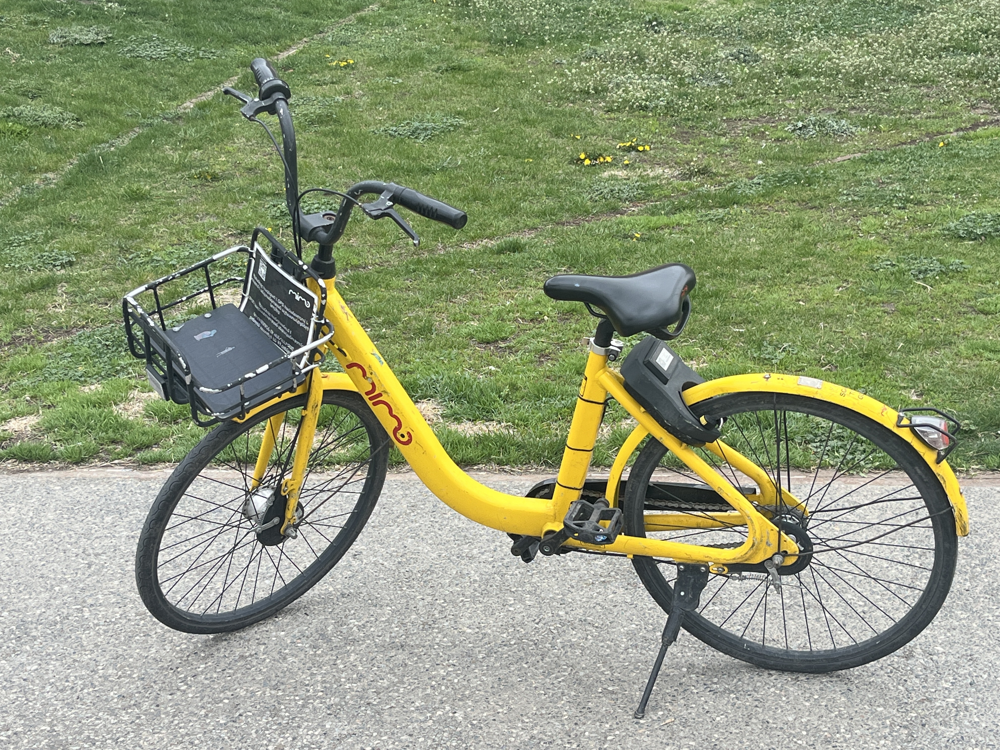
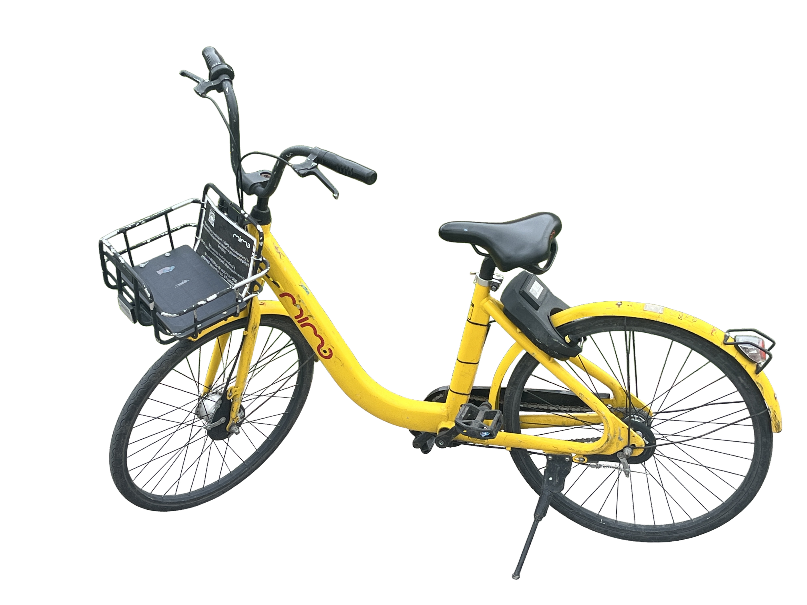

Accurate image segmentation is essential for modern computer vision applications such as image editing, autonomous driving, and medical image analysis. In recent years, Dichotomous Image Segmentation (DIS) has become a standard task for training and evaluating highly accurate segmentation models. Existing DIS approaches often fail to preserve fine-grained details or fully capture the semantic structure of the foreground. To address these challenges, we present FlowDIS, a novel dichotomous image segmentation method built on the flow matching framework, which learns a time-dependent vector field to transport the image distribution to the corresponding mask distribution, optionally conditioned on a text prompt. Moreover, with our Position-Aware Instance Pairing (PAIP) training strategy, FlowDIS offers strong controllability through text prompts, enabling precise, pixel-level object segmentation. Extensive experiments demonstrate that our method significantly outperforms state-of-the-art approaches both with and without language guidance. Compared with the best prior DIS method, FlowDIS achieves a 5.5% higher \(F_{\beta}^{\omega}\) measure and 43% lower MAE (\(\mathcal{M}\)) on the DIS-TE test set. The code is available at: https://github.com/Picsart-AI-Research/FlowDIS.

Overall framework of FlowDIS. During training, a batch of samples is passed to PAIP, which selectively combines pairs of (image, mask, prompt) triplets to produce a mixed batch. The mixed images and masks are encoded into the VAE latent space. For timesteps \( t \sim p(t) \), intermediate latents \( z_{t} \) are obtained as a linear interpolation between the image and mask latents. Text prompts are encoded by the text encoder, and the resulting tokens \( c_{\tau} \), together with \( z_{t} \), \( z^I \) and the sampled timesteps \( t \), are fed into the MMDiT velocity prediction model. The training loss is computed as the MSE between the predicted and ground-truth velocities. During inference, the probability flow ODE is iteratively solved for \( \hat{z}_0 \) with the initial condition \( \hat{z}_{1} = z^{I} \), where \( z^{I} \) denotes the VAE encoding of the input image. The resulting latent \( \hat{z}_0 \) is then decoded by the VAE decoder to obtain the final mask prediction.

Illustration of the Position-Aware Instance Pairing (PAIP) strategy. (a) A reference sample (top triplet) is paired with another sample from the same batch (bottom triplet). (b) Candidate rectangular regions (in green) adjacent to the minimal bounding box (outlined in red) of the reference foreground are computed, and the one with the maximum area is selected as \( R^{\text{max}}_j \). (c) The reference image is padded along the side adjacent to \( R^{\text{max}}_j \) by an amount equal to the length of its opposite side. (d) The pairing foreground is cropped, resized, and placed within the designated placement area. (e) Mask and prompt options are then constructed, from which PAIP randomly selects one for training.




If you use our work in your research, please cite our publication:
@article{sargsyan2026flowdis,
title={{FlowDIS: Language-Guided Dichotomous Image Segmentation with Flow Matching}},
author={Sargsyan, Andranik and Navasardyan, Shant},
journal={arXiv preprint arXiv:2605.05077},
year={2026},
eprint={2605.05077},
archivePrefix={arXiv},
url={https://arxiv.org/abs/2605.05077}
}